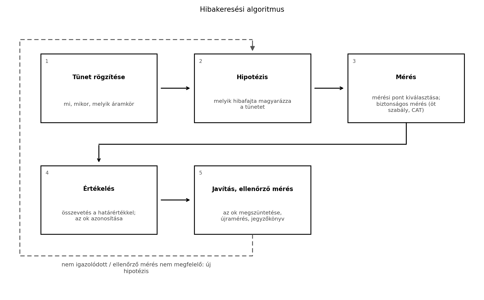

A méréseknek akkor van értékük, ha az eredményük egyértelműen visszakereshető, és a későbbi felülvizsgálatokkal összehasonlítható. Egy lakáselosztó FI-reléjének vizsgálata után például nem elég annyit mondani: „jó”. Azt kell tudni, hogy a kioldási idő volt -nél, a hurokimpedancia , és ezeket az értékeket milyen műszerrel, milyen időpontban, milyen hálózati viszonyok között mérték. Ha a berendezés később meghibásodik, vagy baleset történik, a mérési jegyzőkönyv lesz az egyik legfontosabb bizonyíték arra, hogy a szerelés megfelelt-e a követelményeknek.
Egy frissen felújított lakás elosztójában a szerelő befejezte a védelmi méréseket. A jegyzőkönyvben a következő sorok szerepelnek:
Berendezés: Lakásfőelosztó (1. emelet 4. ajtó)
Hálózati rendszer: TN-C-S
Mérőműszer: többfunkciós installációs vizsgáló, típus: … (gyári szám: …; kalibrálás érvényes: …)
Szigetelési ellenállás L–N:
Hurokimpedancia L–PE: (mért),
FI-relé kioldási ideje 30 mA-nél:
Értékelés: megfelel a hatályos előírásoknak.
Ebből a képből látszik, hogy a jegyzőkönyv nemcsak a mérési értékeket, hanem a mérés körülményeit és a mérőeszköz azonosító adatait is tartalmazza. A későbbi hibakereséskor vagy egy rendkívüli felülvizsgálatkor ezeket az adatokat lehet visszakeresni, és az új mérésekkel összevetni.
Szabály. A mérési jegyzőkönyvnek legalább az alábbi adatcsoportokat kell tartalmaznia, a hatályos ellenőrzési előírások szerint (ellenőrizendő: aktuális szabvány és rendelet szerinti formanyomtatvány):
Megjegyzés. A pontos formanyomtatvány és a kötelező mezők a hatályos jogszabályok és a vonatkozó szabványok szerint változhatnak; a mérést végzőnek mindig az éppen érvényes előírás szerinti jegyzőkönyvet kell használnia. Az itt leírt szerkezet a gyakorlatban használt jegyzőkönyvek közös elemeit foglalja össze.
Példa. Egy háromfázisú lakáselosztónál a jegyzőkönyvben szereplő sorok:
| Mérés | Mért érték | Határérték / feltétel | Értékelés |
|---|---|---|---|
| Védővezető folytonossága | a számított vezetőellenállás nagyságrendje (példa) | megfelel | |
| Hurokimpedancia L–PE | ; 16 A B-karakterisztikájú MCB-nél (példa, ellenőrizendő) | megfelel | |
| Szigetelési ellenállás L-N | (példa, ellenőrizendő) | megfelel | |
| FI-relé kioldási ideje mellett | hálózati feszültségű áramkörben (példa, ellenőrizendő) | megfelel |
A táblázatban a határértékeket jelölni kell, hogy azok szemléltető értékek, mert a konkrét szabványok és a gyártói adatok eltérhetnek.
Recept. A mérési jegyzőkönyv kitöltésének célszerű sorrendje:
Ellenőrzés a kitöltés után: Nézd át, hogy minden mért adat visszakereshető-e, a műszer azonosítója egyértelmű-e, és a határértékek az aktuális szabványnak megfelelőek-e.
A recept 2. lépésének adatai magán a műszeren találhatók. Az alábbi ábrán a műszer hátlapján az adattábla (1) adja a típust, a gyári számot, a vonatkozó szabványsorozatot, a mérési kategóriát és a legnagyobb vizsgálófeszültséget; a 2-es jel a kettős szigetelés jele. A kalibrálási címke (3) a kalibrálás dátumát és érvényességét mutatja. A mérőzsinóron is van CAT-jelölés (5), a csúcsvédő sapka (4) pedig CAT III/IV környezetben csökkenti a véletlen rövidzár esélyét. A nyilak azt mutatják, melyik adat a jegyzőkönyv melyik rovatába kerül.
A műszer és a zsinór közül mindig a kisebb CAT-besorolás érvényes: egy CAT III-as műszer CAT II-es zsinórral csak CAT II-es mérésre alkalmas. Lejárt kalibrálású műszerrel ne kezdj mérésbe. A HTML-kiadásban az adattábla elemeire mutatva megjelenik a jelentésük.
Szabvány. A kisfeszültségű villamos berendezések ellenőrzésére és felülvizsgálatára vonatkozó követelményeket az MSZ HD 60364-6 szabványsorozat tartalmazza; a felülvizsgálatok típusait és gyakoriságát a hatályos magyar jogszabályok is előírják, ezért a konkrét időközöket mindig az éppen érvényes rendelet szerint kell meghatározni. A következő általános kategóriák a gyakorlatban jellemzőek (ellenőrizendő: aktuális rendeleti melléklet):
Szabály. A felülvizsgálatnak három egymásra épülő része van: szemrevételezés, működési próbák, műszeres mérés. A jegyzőkönyv ezek eredményét egységesen dokumentálja. A hibakeresés során is gyakran éppen egy elmaradt időszakos felülvizsgálat deríti ki a lappangó hibát.
A hibakeresés nem találgatás, hanem szisztematikus vizsgálat. Az alábbi módszer (tünet → hipotézis → mérés → ellenőrzés, hét lépésben kibontva) segít elkerülni, hogy a szerelő feleslegesen bontson meg jó alkatrészeket, vagy veszélyes módon, feszültség alatt keresse a hibát.
Módszertan. A hibakeresés alapalgoritmusa a következő:

A lépések részletesen:
Továbbvitt eredmény. Ezt a módszert használjuk a géphibakeresésnél (Diagnosztika: szemrevételezés, mérések, hibajegyzőkönyv), a motorvezérlések hibakeresésénél (Vezérlések hibakeresése), az épületvillamossági modelleken végzett gyakorlatoknál (Hibakeresés épületvillamossági modelleken) és a védelmi mérések gyakorlatánál (Védelmi mérések gyakorlata és a jegyzőkönyv kitöltése).
A leggyakoribb négy hibafajta jellemzői:
Szigetelési hiba. Tünete lehet a FI-relé leoldása, zárlati áram, vagy a szigetelési ellenállás csökkenése. A mérés módja: feszültségmentes állapotban, DC vizsgálófeszültséggel a fázis és a védővezető, illetve a fázis és a nulla között. Ha a mért érték kisebb a megengedettnél (például lakossági áramköröknél jellemzően alatt van, de az aktuális határértéket ellenőrizni kell), akkor szigetelési hibáról beszélünk. Ok lehet sérült vezetékszigetelés, nedvesség a kötődobozban, vagy hibás fogyasztó.
Ha a teljes kör szigetelése nem felel meg, a hibát szakaszonként, a kör „felezésével” keressük. Az alábbi ábra négy lépése a Mérések I. valós esetének adataival készült: (1) a teljes kör L–PE értéke 0,7 MΩ; (2) a kör közepe táján lévő D2 kötődobozban a kötést bontva az elosztó felőli rész > 200 MΩ, tehát jó; (3) D2-ből a távoli rész felé mérve ismét 0,7 MΩ, a hiba tehát D2 után van; (4) D3-nál is bontva a D2–D3 szakasz jó, a hiba D3-tól kezdődik – itt a beázott doboz volt az ok.
Minden bontás előtt a kört feszültségmentesíteni kell, és minden mérés után ki kell sütni; a bontott kötéseket a végén szakszerűen vissza kell kötni, és a teljes kört újra meg kell mérni (itt a doboz cseréje után 120 MΩ). A HTML-kiadásban a négy lépés egymás után lejátszható.
Szakadás. Tünete: a fogyasztó nem működik, de a kismegszakító nem old le. A folytonosságmérés -hoz közeli értéket vár, ha az áramkör ép; ha a mért ellenállás nagy, a vezeték vagy a kötés szakadt. A szakadás gyakran rossz érvéghüvelyezés, törés a hajlításnál, vagy laza sorkapocs miatt alakul ki. A mérést feszültségmentes állapotban kell végezni, először a vezető két vége között, majd szükség esetén szakaszonként.
Kötés lazulása. Tünete: a csatlakozás melegszik, a kötés helyén szikrázás, szag, vagy a fogyasztó időnként kimarad. A laza kötés hőt termel, ami roncsolhatja a szigetelést és tüzet okozhat. A méréshez feszültség alatt lakatfogóval áramot, és a kötés két pontján feszültségesést lehet mérni; feszültségmentes állapotban pedig nagy áramú méréssel vagy mikroohmmérővel a csatlakozó ellenállását. A javítás a csavarkötés meghúzása a megfelelő nyomatékkal, esetleg a sorkapocs cseréje.
Túlterhelés. Tünete: a kismegszakító időnként leold, de rövidzárlatnak nincs jele. A mérés lakatfogóval történik, áramot mérve az egyes fázisokban. Ha az áram tartósan meghaladja a vezeték terhelhetőségét, akkor a vezeték, a védőeszköz és a csatlakozók is melegednek. A megoldás nem a nagyobb névleges áramú kismegszakító beépítése, hanem a terhelés csökkentése vagy az áramkör szétosztása, illetve a elv betartása (üzemi áram → kismegszakító névleges árama → vezeték terhelhetősége).
Egy régi lakásban a FI-relé a nyári hónapokban esténként, véletlenszerűen leoldott. A tulajdonos először ki akarta cserélni a FI-relét, mert azt hitte, hogy az öreg, és „néha beugrik”. A szerelő a hibakeresési módszert követte:
A tanulság az, hogy a FI-relé nem „idegességből” old le, hanem mindig van oka. A jegyzőkönyv pedig azt is igazolja, hogy a szerelő nem tüneti kezelést végzett, hanem a hibát megszüntette.
Cél: Tanműhelyi modellen gyakorold a mérési jegyzőkönyv kitöltését és egy szándékosan beépített hiba azonosítását.
Eszközök és anyagok: - Tanműhelyi elosztómodell FI-relével, kismegszakítóval, pár fogyasztóval és mérési pontokkal (törpefeszültségű vagy leválasztott, oktató által felügyelt környezet). - Szigetelési ellenállásmérő, multiméter, hurokimpedancia-mérő (a modellhez illesztett vagy szimulált mérési lehetőség). - Mérési jegyzőkönyv-formanyomtatvány (papíron vagy elektronikusan). - Alapkapcsolási rajz a mérési pontok megnevezésével. - Egyéni védőeszközök, zárt munkaterület.
Biztonsági korlát. A feladat tanműhelyi (törpefeszültségű) környezetre vagy jogosult oktató felügyeletére vonatkozik; hálózati feszültségen önállóan ne végezd. A hurokimpedancia- és FI-mérések valós hálózaton feszültség alatt történnek, ezért azokat kizárólag a hatályos munkavédelmi szabályok szerint, jogosult személy végezheti. A tanműhelyi gyakorlatban a modell mindig feszültségmentes legyen, kivéve, ha az oktató kifejezetten feszültség alatti mérést engedélyez.
Az öt biztonsági szabály a mérés megkezdése előtt: 1. Lekapcsolás (a modell táplálásának megszüntetése). 2. Visszakapcsolás elleni biztosítás (letiltás, kulcs eltávolítása, kitiltó tábla). 3. Feszültségmentesség ellenőrzése (kétpólusú feszültségmérővel a mérési pontokon). 4. Földelés és rövidre zárás (ahol a munkakörnyezet előírja). 5. Szomszédos feszültség alatti részek lefedése (ha van).
A gyakorlat lépései:
Ellenőrzési pontok: - A folytonosságmérésnél a vezeték ellenállása kb. alatt legyen (a modell hosszától függően; szemléltető érték). - A szigetelési ellenállás a javítás után érje el a határértéket (230/400 V-os körnél , ellenőrizendő), és jóval haladja meg a javítás előtti értéket. - A jegyzőkönyvben a hiba oszlopban szerepeljen az eredeti mért érték és a javítás utáni érték is.
Tipikus hibák a gyakorlatban: - A mérési jegyzőkönyvet kitöltik, de a műszer kalibrálási adatait üresen hagyják; ez a jegyzőkönyvet hiteltelenné teheti. - A folytonosságmérést a fogyasztók csatlakoztatott állapotában végzik, ami hamis eredményt adhat; a mérés előtt le kell választani a fogyasztókat. - A javítás utáni ellenőrző mérést elfelejtik, így a jegyzőkönyv nem igazolja a hiba megszűnését.
A válaszokat a ### Megoldások részben találod.
1. feladat (A). Sorold fel a mérési jegyzőkönyv nyolc fő adatcsoportját, és mindegyikhez írj egy konkrét példát.
2. feladat (A). Írd le, mi a különbség az első felülvizsgálat, az időszakos felülvizsgálat és a rendkívüli felülvizsgálat között. Mikor kell rendkívüli felülvizsgálatot végezni?
3. feladat (B). Egy irodai elosztóban a
kismegszakító
B-karakterisztikájú. A mért hurokimpedancia
,
az
.
a) Számítsd ki a zárlati áramot.
b) Állapítsd meg, hogy a
B-kismegszakító kiold-e a számított zárlati áramnál, ha a pillanatkioldó
áram
(feltétel:
,
ahol
).
c) Írd le, hogyan írnád be ezt az eredményt a jegyzőkönyvbe, a
határértékkel együtt.
4. feladat (B). Egy lakásban a FI-relé
érzékenységű, és leold éjszaka. A szerelő leválasztja a mosógép
áramkörét, és a FI-relé már nem old le. A mosógép bekötésénél a
szigetelési ellenállás L–PE között
,
a többi fogyasztói csoportnál
.
a) Melyik hibafajtára utal a jelenség?
b) Milyen további mérést érdemes végezni a mosógép áramkörén?
c) Fogalmazd meg a jegyzőkönyvbe írandó javítási javaslatot.
5. feladat (C). Egy berendezésnél a következő mérési
eredmények születtek:
- Védővezető folytonossága:
- Szigetelési ellenállás L1–PE:
- Hurokimpedancia L1–PE:
- FI-relé kioldási ideje
-nél:
A védőeszközök:
B-kismegszakító, FI-relé
.
a) Értékeld, melyik mérési eredmény nem felel meg, ha a határérték a B16
pillanatkioldó áramából (80 A) számított
(példa) és a FI-relé maximális kioldási ideje
(példa), a szigetelési ellenállás alsó határa
.
b) Javasolj hibakeresési lépéseket a nem megfelelő tételhez.
c) Írd le, mit kellene a jegyzőkönyvbe írni.
6. feladat (D). Tanműhelyi modellen az oktató egy hibát épített be: az egyik sorkapocs csavarja laza, emiatt az adott fogyasztó időnként nem működik, és a sorkapocs melegszik. Tervezd meg a hibakeresési gyakorlatot: milyen tünetet rögzítenél, milyen hipotézist állítanál fel, milyen méréseket végeznél, és hogyan igazolnád a javítás sikerét? Készíts mérési jegyzőkönyv-vázlatot a mért képzeletbeli értékekkel.
Önellenőrzés – válaszok
Feladatok megoldásai
1. feladat (A). A nyolc adatcsoport a fent leírtak szerint, példákkal: 1. Felülvizsgáló azonosítása: „Kiss István, villanyszerelő mester, nyilvántartási szám …”. 2. Berendezés azonosítása: „Lakásfőelosztó, Budapest, Minta utca 1., II/4., TN-C-S rendszer”. 3. Mérőműszerek: „Fluke 1664 FC, gy. sz. 123456, kalibrálás érvényes 2027-01-31, CAT III 600 V”. 4. Mérési időpont és körülmények: „2025.05.10., 14:30, 22 °C, 45% páratartalom”. 5. Mérési eredmények és határértékek: „Hurokimpedancia 0,62 Ω, határérték ≤ 2,875 Ω (B16), megfelel”. 6. Minősítés: „Megfelel”. 7. Megjegyzések: „Az elosztó ajtaján hiányzó felirat, pótolandó”. 8. Aláírás, azonosító: „Aláírás, 1/2. oldal”.
2. feladat (A). Első felülvizsgálat: új létesítés vagy átalakítás után, üzembe helyezés előtt. Időszakos: meghatározott időközönként, a kockázattól függően. Rendkívüli: baleset, tűz, üzemzavar, villámcsapás, vagy a biztonságot befolyásoló változás után. Rendkívüli kell például akkor, ha a FI-relé ismétlődően leold, és a hiba oka ismeretlen.
3. feladat (B).
a)
.
b)
,
tehát
,
a kismegszakító pillanatkioldója kiold.
c) Jegyzőkönyvbe: „Hurokimpedancia (L–PE): 0,45 Ω; számított zárlati
áram: 511 A; védőeszköz: B16 MCB, pillanatkioldó: 80 A; feltétel: 511 A
≥ 80 A; értékelés: megfelel.” A határértéket is fel lehet tüntetni:
(példa, ellenőrizendő).
4. feladat (B).
a) Szigetelési hiba.
b) A mosógép áramkörén feszültségmentes állapotban további szigetelési
mérést kell végezni, például L–N és N–PE között is, és a mosógép belső
vezetékét, motorját, fűtőbetétjét ellenőrizni. A kötődobozt és a
mosógépet külön-külön kell mérni (a fogyasztó leválasztásával), hogy
kiderüljön, a hiba csak a mosógépben van-e, vagy a kötődobozban.
c) Jegyzőkönyvbe: „A mosógép áramkörének szigetelési ellenállása L–PE
között 0,2 MΩ, ami a határérték alatt van (230 V-on ez csak kb. 1,2 mA,
ezért a kioldás azt jelzi, hogy éjszaka, párásodáskor vagy vezérelt
áramú üzemben a szigetelés tovább romlik, vagy más szivárgásokkal
összegződik). Javaslat: a mosógép bekötését és a fogyasztót
javítani/cserélni, majd ellenőrző mérést végezni.”
5. feladat (C).
a) A szigetelési ellenállás L1–PE = 2,1 MΩ ≥ 1 MΩ, tehát megfelel. A
védővezető folytonossága 0,6 Ω viszonylag magas, de ha a vezeték hosszú,
elfogadható; a határértéket a körülmények döntik el (ebben a példában
nincs megadva). A hurokimpedancia 1,8 Ω ≤ 2,875 Ω (B16: 230/80), a
zárlati áram 230/1,8 ≈ 128 A ≥ 80 A, tehát megfelel (a
Mérések II.: hurokimpedancia, zárlati áram,
FI-vizsgálat alfejezet 1,3-as hőmérsékleti tényezőjével is 2,34 Ω ≤
2,875 Ω). A FI-relé kioldási ideje 220 ms ≤ 300 ms, tehát
megfelel.
b) A hurokimpedancia megfelel, de a 0,6 Ω-os védővezető-folytonosság és
a 2,1 MΩ-os szigetelés (a 230/400 V-os határ 1 MΩ, de a tartalék kicsi)
figyelmet érdemel: ellenőrizni kell a kötéseket, a védővezető
folytonosságát, a nulla és PE viszonyát; szakaszonként mérni. (Ha a
védőeszköz C16 lenne, 1,8 Ω > 1,4375 Ω miatt nem felelne meg.)
c) A jegyzőkönyvbe: „Hurokimpedancia L1–PE: 1,8 Ω; határérték (B16):
2,875 Ω; értékelés: megfelel; megjegyzés: a 0,6 Ω-os
védővezető-folytonosság és a 2,1 MΩ-os szigetelés a kötések ellenőrzését
indokolja.”
6. feladat (D).
Tünet: a fogyasztó időnként kimarad, a sorkapocs környezete meleg, enyhe
szag. Hipotézis: laza kötés. Mérések: feszültségmentes állapotban a
sorkapocs két oldala között átmeneti ellenállásmérés (nagy árammal vagy
mikroohmmérővel), a fogyasztói áramkör folytonossága; feszültség alatt
(jogosult személy) feszültségesés mérése a kötés két pontján. Javítás: a
csavar meghúzása a megadott nyomatékkal, vagy a sorkapocs cseréje.
Ellenőrző mérés: a folytonosságmérés értéke a javítás előtti
-ról
alá csökken; a fogyasztó feszültsége visszaáll. Jegyzőkönyv-vázlat:
„Hiba típusa: laza sorkapocs; mért átmeneti ellenállás javítás előtt:
0,8 Ω; javítás után: 0,05 Ω; fogyasztói feszültség: 230 V; értékelés:
megfelel.”
A mérési jegyzőkönyv a villamos berendezés biztonságosságának hivatalos bizonyítéka. Legalább annyira fontos, mint maga a mérés; hiányos vagy pontatlan kitöltése esetén a mérési eredmény nem igazol semmit. A jegyzőkönyvnek tartalmaznia kell a felülvizsgáló, a berendezés, a mérőműszer, a mérési körülmények és az eredmények azonosító adatait, valamint a határértékekkel való összevetést és a minősítést. A szabványossági felülvizsgálat lehet első, időszakos, rendkívüli vagy eseti; a gyakoriságot a hatályos jogszabályok és a kockázatértékelés határozza meg. A hibakeresésben tünet → hipotézis → mérés → ellenőrzés sorrendet kell követni, és a hibafajták közül meg kell különböztetni a szigetelési hibát, a szakadást, a kötés lazulását és a túlterhelést. Továbbvitt eredmény: a mérési jegyzőkönyv kitöltésének és a hibakeresési módszertannak a készsége nélkülözhetetlen a géphibakeresés (Diagnosztika: szemrevételezés, mérések, hibajegyzőkönyv), a motorvezérlések hibakeresése (Vezérlések hibakeresése), az épületvillamossági modelleken végzett gyakorlatok (Hibakeresés épületvillamossági modelleken) és a védelmi mérések gyakorlata (Védelmi mérések gyakorlata és a jegyzőkönyv kitöltése) során.
A szöveg a magyarországi és európai gyakorlatot tükrözi, elsősorban a kisfeszültségű villamos berendezések ellenőrzésére vonatkozó MSZ HD 60364 sorozat, azon belül is a -6 rész, valamint a vonatkozó mérésügyi és munkavédelmi jogszabályok alapján. A konkrét határértékek (hurokimpedancia, szigetelési ellenállás, FI kioldási idő) és a felülvizsgálati gyakoriságok a szövegben jelzett példaértékek, ezért a tervezéshez vagy kivitelezéshez mindig az aktuális szabványkiadást és a hatályos rendeletet, valamint a gyártói adatlapokat kell használni. (ellenőrizendő: aktuális szabvány- és jogszabályhivatkozások, pontos formanyomtatvány, mérési határértékek, felülvizsgálati intervallumok).